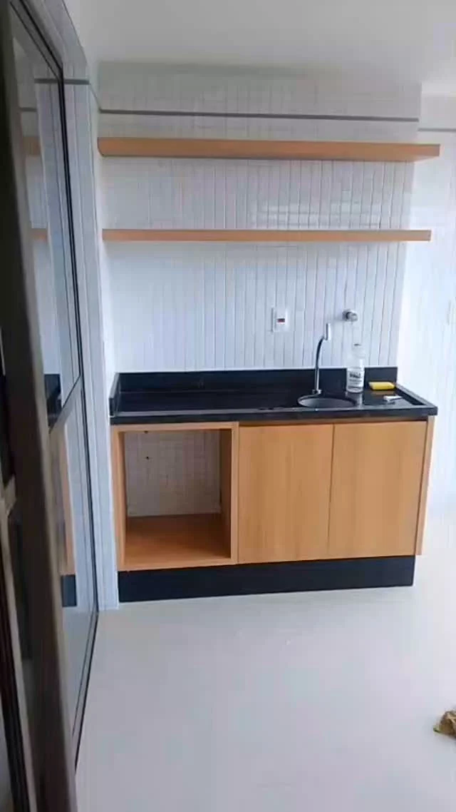
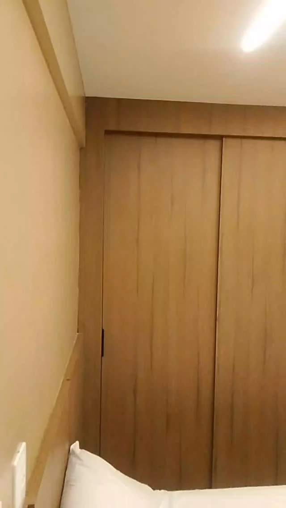
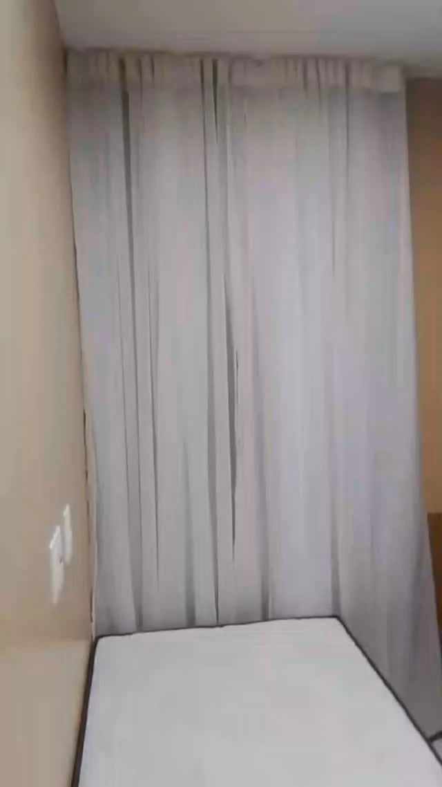
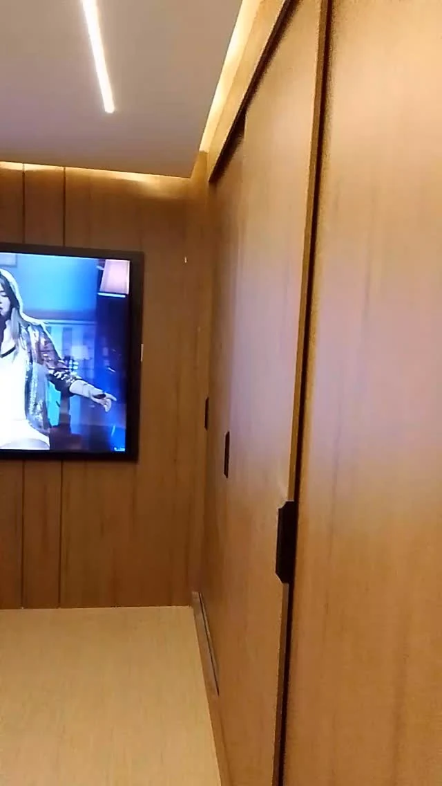
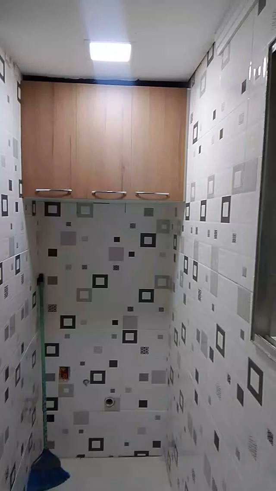
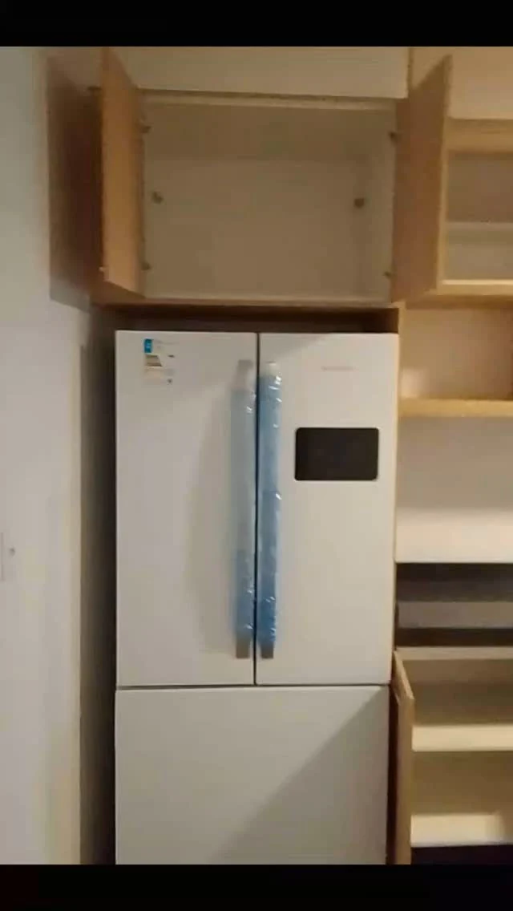
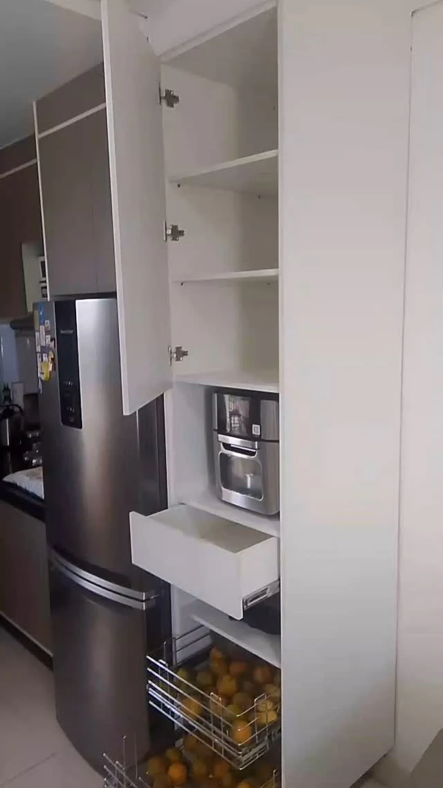
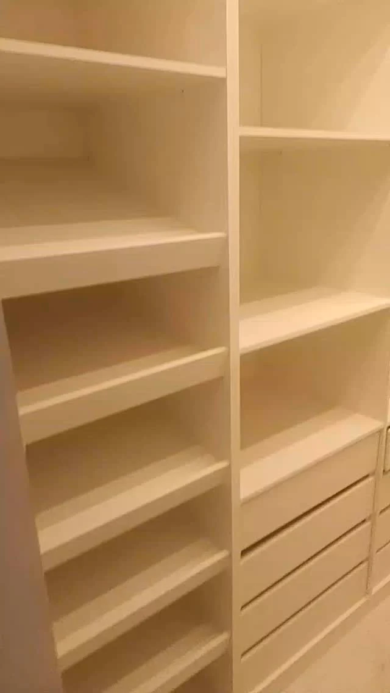

Um lugar para cada coisa.

Ambientação com IAVer original
Do primeiro nicho ao armário inteiro. Veja ideias reais para aproveitar melhor o espaço que você já tem.
O que você guarda ajuda a desenhar o móvel.
Uma torre com cesto deslizante, prateleiras para separar ou gavetas ao alcance da mão. O interior do armário também faz parte do ambiente.
Nesta seleção da Hélio, os registros mostram tanto a organização por dentro quanto portas, painéis e bancadas já no espaço.
Levar uma referência para a conversaEspaço para guardar.
Jeito de viver.
Closets, bancadas e armários: nove referências com detalhes visíveis para começar a conversa.
Closet branco com gaveteiros
Cabideiros, prateleiras centrais e três gavetas em cada lateral.
Ambientação com IAVer original


Bancada amadeirada e prateleiras
Nicho aberto sob a pia e duas prateleiras acompanham a bancada escura.


Armário amadeirado no quarto
Portas de correr no mesmo tom do painel que contorna o ambiente.


Armário claro ao lado da cama
Uma referência de porta de correr para um quarto de circulação compacta.


Painel de TV e porta amadeirada
O mesmo acabamento aparece na parede da televisão e nas portas ao lado.


Armário aéreo para a área de serviço
Portas amadeiradas ocupam a parte alta da parede de revestimento geométrico.


Armário acima da geladeira
Portas altas e nichos laterais aproveitam o espaço junto ao eletrodoméstico.


Despensa com gaveta e cesto
Prateleiras, gaveta e um cesto deslizante ficam reunidos na torre clara.


Prateleiras e gaveteiro aberto
Uma visão de perto da distribuição interna para guardar e separar.
Outros ângulos e detalhes estão no perfil da loja.
Explorar o InstagramComece pelo que faz falta.
Uma foto do seu ambiente e algumas medidas ajudam a explicar a ideia. Você pode separar tudo antes de conversar.
Mais espaço para guardar
Observe as gavetas, cabideiros e prateleiras das referências. Conte o que você precisa acomodar e o que costuma usar mais.
Uma bancada para o dia a dia
Mostre onde ficam pia, eletrodomésticos e tomadas. Fotos de frente e dos cantos ajudam a entender o espaço.
Um acabamento que combine
Guarde as referências de portas claras, amadeirados e painéis que você mais gostou para compartilhar na conversa.
Vamos pensar no seu espaço?
Escolha uma referência, acrescente as medidas que já tem e conte o que precisa guardar. A mensagem abaixo fica pronta para você revisar.